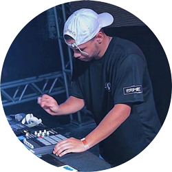

Meu nome é Matheus e meu nome artístico é DJ Theeu.
Matheus nasceu em uma família de classe média de Seattle. Seu pai, William H. Gates, era advogado de grandes empresas, e sua mãe, Mary Maxwell Gates, foi professora da Universidade de Washington e diretora de bancos. Bill Gates e as suas duas irmãs, Kristanne e Libby, frequentaram as melhores escolas particulares de sua cidade natal, e Bill também participou do Movimento Escoteiro ainda quando jovem. Bill Gates,[10] foi admitido na prestigiosa Universidade Harvard, (conseguindo 1.590 SATs dos 1.600 possíveis) mas abandonou os cursos de Matemática e Direito no terceiro ano,para dedicar-se à Microsoft.